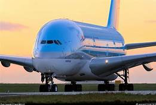

Stratolaunch

Empty weight: 226,796 kilograms
Length: 73 meters
Wingspan: 117 meters
First flight: 2019 (TBC)
It has not flown yet, but the moment it does, the Stratolaunch, an aircraft project founded by Microsoft co-founder Paul Allen will become the largest wingspan aircraft in history, surpassing the Hughes H-4 Hercules.
The awkward-looking aircraft, composed of two fuselages joined together (although only one will pressurized to carry the crew,) is designed to meet the needs of the nascent private space industry -- its purpose is to act as a flying launch platform to put payloads in orbit.
Hughes H-4 Hercules ("Spruce Goose")

Empty weight: 113,399 kilograms
Length: 66.65 meters
Wingspan: 97.54 meters
First flight: 1947
Its first and only flight was just 26 seconds long (or around one and a half kilometers,) but this short interval is enough for the "Spruce Goose" to be considered the largest wingspan aircraft that has ever flown.
A project of aviation tycoon Howard Hughes, the H-4 was depicted in 2004 movie "The Aviator," starring Leonardo DiCaprio.
This giant flying boat, made of wood and fitted with eight engines, was designed during World War II in response to the country's long range heavy transport needs.
Its only prototype is currently preserved at the Evergreen Aviation & Space Museum in McMinnville, Oregon.